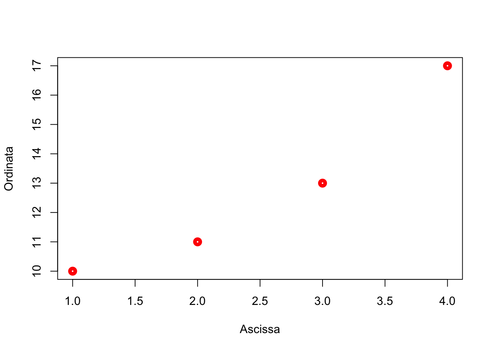
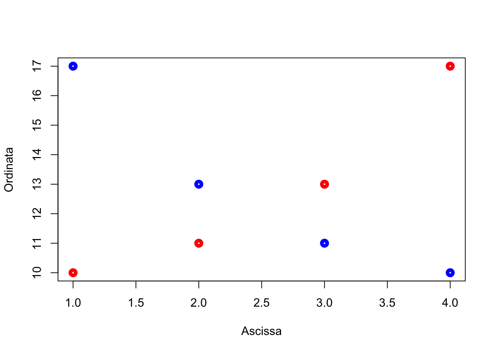
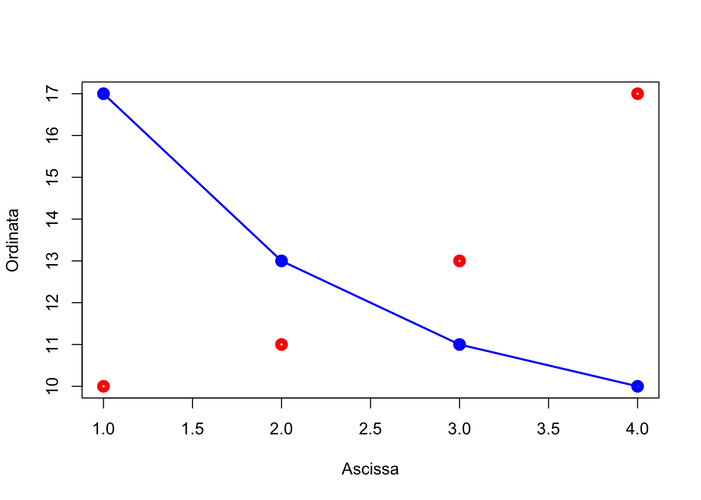
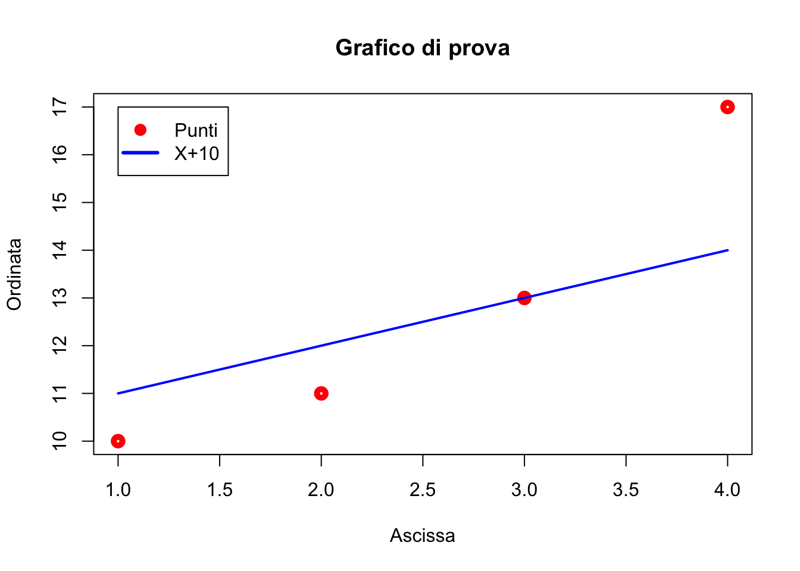
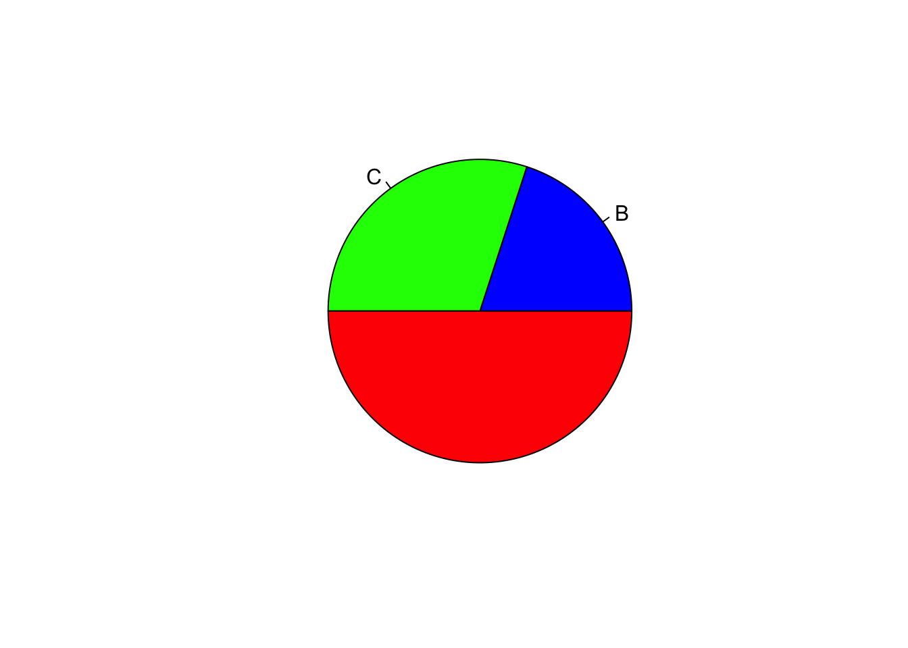

Capitolo 4 Per iniziare: introduzione ad R
4.1 Cosa è R?
R è un software cugino di S-PLUS, con il quale condivide la gran parte delle procedure ed una perfetta compatibilità. Rispetto al cugino più famoso, è completamente freeware (sotto la licenza GNU General Public Licence della Free Software Foundation) ed è nato proprio per mettere a disposizione degli utenti un software gratuito, potente, mantenendo comunque la capacità di lavorare in proprio senza usare software di frodo.
E’uno strumento molto potente, anche da un punto di vista grafico, ma necessita di una certa pratica, in quanto manca di una vera e propria interfaccia grafica (Graphical User Interface: GUI) e, di conseguenza, è spesso necessario scrivere codice.
Inoltre, si tratta di un programma Open Source, cioè ognuno può avere accesso al suo codice interno ed, eventualmente, proporne modifiche. Altro vantaggio è che, oltre che un programma, R è anche un linguaggio object oriented, che può essere utilizzato dall’utente per creare funzioni personalizzate.
Per evitare noiosi errori che possono essere molto comuni per chi è abituato a lavorare in ambiente WINDOWS, è bene precisare subito che R, come tutti i linguaggi di derivazione UNIX, è case sensitive, cioè distingue tra lettere maiuscole e lettere minuscole.
4.2 Oggetti e assegnazioni
4.3 Costanti e vettori
R lavora con valori, stringhe di caratteri, vettori e matrici, che vengono assegnati alle variabili con opportuni comandi. Ad esempio, il comando:
y <- 3
y## [1] 3assegna il valore 3 alla variabile y. Invece il comando:
x <- c(1, 2, 3)
x## [1] 1 2 3crea un vettore x contenente i numeri 1,2 e 3. Bisogna precisare che il ‘vettore’, in R, non ha alcun legame con la fisica o l’algebra, ed è semplicemente una collezione di numeri (o strighe) consecutivi.
4.4 Matrici
Oltre ai vettori, in R possiamo definire le matrici. Ad esempio il comando:
z <- matrix(c(1, 2, 3, 4, 5, 6, 7, 8), 2, 4, byrow=TRUE)crea una matrice z a 2 righe e 4 colonne, contenente i numeri da 1 a 8. La matrice viene riempita per riga.
Come già mostrato, per visualizzare il contenuto di una variabile basta digitare il nome della variabile. Ad esempio:
z## [,1] [,2] [,3] [,4]
## [1,] 1 2 3 4
## [2,] 5 6 7 8Gli elementi di una matrice possono essere richiamati con un opportuno utilizzo delle parentesi quadre:
z[1,3]## [1] 34.5 Operazioni ed operatori
Le variabili possono essere create anche con opportune operazioni algebriche, che si eseguono utilizzando i normali operatori (+, -, *, /). Ad esempio:
f <- 2 * y
f## [1] 64.6 Funzioni ed argomenti
Per eseguire operazioni particolari si utilizzano, in genere, le funzioni. Una funzione è richiamata con un nome ed uno o più argomenti. Ad esempio, il comando:
log(5)## [1] 1.609438Calcola il logaritmo naturale di 5 e richiede un solo argomento, cioè il numero di cui calcolare il logaritmo. Al contrario, il comando:
log(100, 2)## [1] 6.643856Calcola il logaritmo in base 2 di 100 e richiede due argomenti, cioè il numero di cui calcolare il logaritmo e la base del logaritmo. Quando sono necessari due o più argomenti essi debbono essere messi nell’ordine esatto (in questo caso prima il numero poi la base) oppure debbono essere utilizzati i riferimenti corretti. Ad esempio, i due comandi:
log(100, base=2)## [1] 6.643856log(base=2, 100)## [1] 6.643856restituiscono lo stesso risultato, al contrario dei due comandi seguenti:
log(100, 2)## [1] 6.643856log(2, 100)## [1] 0.1505154.7 Dataframe
Oltre a vettori e matrici, in R esiste un altro importante oggetto, cioè il dataframe, costituito da una tabella di dati con una o più colonne di variabili e una o più righe di dati. A differenza della matrice, il dataframe può essere utilizzato per memorizzare variabili di diverso tipo (numeri e caratteri). Un dataframe può essere creato unendo più vettori, come nell’esempio seguente.
parcelle <- c(1, 2, 3, 4, 5, 6)
tesi <- factor(c("A", "A", "B", "B", "C", "C"))
dati <- c(12, 15, 16, 13, 11, 19)
tabella <- data.frame("Parc"=parcelle,"Tesi"=tesi,"Produzioni"=dati)
tabella## Parc Tesi Produzioni
## 1 1 A 12
## 2 2 A 15
## 3 3 B 16
## 4 4 B 13
## 5 5 C 11
## 6 6 C 19Per utilizzare i dati in un dataframe, bisognerà accedere ai singoli vettori colonna che lo costituiscono. Per far questo possiamo utilizzare l’estrattore $:
tabella$Parc## [1] 1 2 3 4 5 6oppure possiamo utilizzare gli indici, che nel caso del dataframe, cioè una struttura dati bidimensionale, sono due, uno per le righe e uno per le colonne, separati da virgole:
tabella[,1]## [1] 1 2 3 4 5 6oppure si può usare il comando attach(), che crea immediatamente tre vettori (Pianta, Varietà e Altezza), disponibili per le successive elaborazioni.Possiamo osservare infatti che, dopo aver creato la matrice ‘tabella’, digitando quanto segue R ci mette a disposizione il vettore ‘Produzioni’.
attach(tabella)
Produzioni## [1] 12 15 16 13 11 19I dataframe possono essere editati velocemente utilizzando il comando fix, che fa apparire una finestra di editing tipo ‘foglio elettronico’.
4.8 Quale oggetto sto utilizzando?
Per avere informazioni sulla natura di un oggetto creato in R, posso usare la funzione str(), come nell’esempio seguente:
str(tabella)## 'data.frame': 6 obs. of 3 variables:
## $ Parc : num 1 2 3 4 5 6
## $ Tesi : Factor w/ 3 levels "A","B","C": 1 1 2 2 3 3
## $ Produzioni: num 12 15 16 13 11 19Vediamo infatti che R ci informa che l’oggetto ‘tabella’ è in realtà un dataframe composto da tre colonne, di cui la prima e la terza sono numeriche, mentre la seconda è una variabile qualitativa (fattore).
4.9 Consigli per l’immissione di dati sperimentali
I dati delle prove sperimentali si possono o importare in R da altri software (ad esempio Excel) oppue si possono digitare direttamente in R. In quest’ultimo caso, in genere, si crea un vettore per ogni colonna di dati e, successivamente, si riuniscono i vettori in un dataframe, che viene poi salvato nel workspace, come vedremo in seguito.
4.9.1 Immissione manuale di dati
L’immissione dei dati in R (e quindi la creazione di vettori) può essere velocizzata utilizzando la funzione scan(), separando i dati con INVIO (questo è comodo perchè ci permette di lavorare senza abbandonare il tastierino numerico!). L’immissione termina quando si digita un INVIO a vuoto.
dati <- scan()
1: 12
2: 14
3: 16
4: 18
5: 20
6:
Read 5 items
dati
[1] 12 14 16 18 20La stessa funzione può essere anche utilizzata per immettere comodamente stringhe di caratteri, con un opportuno impiego dell’argomento what. In questo caso è possibile omettere le virgolette.
tesi <- scan(what = "character")
1: aurelio
2: aurelio
3: aurelio
4: claudio
5: claudio
6: claudio
7: latino
8: latino
9: latino
10:
Read 9 items
tesi
[1] "aurelio" "aurelio" "aurelio" "claudio"
"claudio" "claudio" "latino" "latino" "latino"
>4.9.2 Immissione di numeri progressivi
Per creare una serie progressiva, si può utilizzare il comando seq(n,m,by=step) che genera una sequenza da \(n\) a \(m\) con passo pari a \(step\).
parcelle <- seq(1,50,1)
parcelle## [1] 1 2 3 4 5 6 7 8 9 10 11 12 13 14 15 16 17 18 19 20 21 22 23
## [24] 24 25 26 27 28 29 30 31 32 33 34 35 36 37 38 39 40 41 42 43 44 45 46
## [47] 47 48 49 504.9.3 Immissione dei codici delle tesi e dei blocchi
A volte i codici delle tesi sono sequenze ripetute di stringhe. Ad esempio, i primi quattro dati potrebbero essere riferiti alla varietà BAIO, i secondi quattro alla varietà DUILIO, i successivi quattro alla varietà PLINIO. Per creare velocemente questo vettore, possiamo utilizzare la funzione rep(), in questo modo.
tesi <- factor(c("BAIO", "DUILIO", "PLINIO"))
tesi## [1] BAIO DUILIO PLINIO
## Levels: BAIO DUILIO PLINIOtesi <- rep(tesi,each=4)
tesi## [1] BAIO BAIO BAIO BAIO DUILIO DUILIO DUILIO DUILIO PLINIO PLINIO
## [11] PLINIO PLINIO
## Levels: BAIO DUILIO PLINIONotare l’uso della funzione factor() per creare un vettore di dati qualitativi (fattore). Allo stesso modo, per immettere i codici dei blocchi possiamo utilizzare la stessa funzione in un modo diverso. Ammettiamo infatti che i quattro valori di ogni tesi appartengano rispettivamente ai quattro blocchi; si opera quindi in questo modo.
tesi <- (c (1, 2, 3, 4))
tesi <- rep(tesi, times=3)
tesi## [1] 1 2 3 4 1 2 3 4 1 2 3 44.9.4 Leggere e salvare dati esterni
Oltre che immessi da tastiera, i dati possono essere importati in R da files esterni, Inoltre, gli oggetti di R creati nel corso di una sessione possono essere memorizzati su files esterni. Partiamo dal presupposto di aver creato (come frequentemente avviene) il nostro database con EXCEL e di volerlo importare in R nel DATAFRAME dati.
Creiamo in EXCEL la tabella riportata di seguito, che si riferisce a 20 piante di mais.
| Pianta | Var | Altezza |
|---|---|---|
| 1 | N | 172 |
| 2 | S | 154 |
| 3 | V | 150 |
| 4 | V | 188 |
| 5 | C | 162 |
| 6 | N | 145 |
| 7 | C | 157 |
| 8 | C | 178 |
| 9 | V | 175 |
| 10 | N | 158 |
| 11 | N | 153 |
| 12 | N | 191 |
| 13 | S | 174 |
| 14 | C | 141 |
| 15 | N | 165 |
| 16 | C | 163 |
| 17 | V | 148 |
| 18 | S | 152 |
| 19 | C | 169 |
| 20 | C | 185 |
La procedura è la seguente:
- salviamo questa tabella nel file di testo: comma delineated ‘import.csv’. Per far questo scegliere ‘Menù - File - Salva con nome’. Scegliere un nome per il file ed indicare: ’Tipo file = CSV (delimitato dal separatore di elenco) (*.csv). Salvare quindi il file in una directory prescelta.
- Avviare una sessione R, cambiare la directory predefinita del sistema, scegliendo, con il menu File - Change Directory, la cartella nella quale abbiamo memorizzato il file di importazione.
- Leggere il file di testo in un dataframe, con il seguente comando:
setwd("myWorkingDir")
dati <- read.csv("import.csv", header=TRUE)Il comando appena descritto ha successo per file CSV creati con la versione inglese di Windows, caratterizzati dal punto come separatore decimale e dalla virgola come separatore di elenco. Se invece il computer fosse settato all’italiana, con la virgola come separatore decimale e il punto e virgola come separatore di elenco, allora si potrebbe utilizzare la funzione read.csv2() (stessa sintassi). Con questi due comandi, in R viene creato un dataframe di nome dati, contenente le tre colonne della tabella ‘import.csv’ appena creata, comprese le intestazioni di colonna.
I dati contenuti in un dataframe o in qualunque altro oggetto possono essere salvati in un file esterno (in formato R binario):
save(file="dati1.rda", dati)ed eventualmente ricaricati:
load("dati1.rda")Per scrivere in un file di testo (in questo caso comma delineated, ma il separatore di elenco può essere modificato secondo le nostre esigenze con l’argomento sep) si utilizza il seguente comando:
write.table(dati, "residui.csv", row.names=FALSE,
col.names=TRUE, sep=",")4.10 Alcune operazioni comuni sul dataset
4.10.1 Selezionare un subset di dati
E’ possibile estrarre da un dataframe un subset di dati utilizzando la funzione:
subset(dataframe, condizione)Ad esempio, se consideriamo il dataframe tabella creato in precedenza, è possibile selezionare tutte le righe relative alle Tesi A e C come segue:
tabella2 <- subset(tabella, Tesi == "A" | Tesi == "C")
tabella2## Parc Tesi Produzioni
## 1 1 A 12
## 2 2 A 15
## 5 5 C 11
## 6 6 C 19Notare il carattere “|” che esprime la condizione logica OR. La condizione logica AND si esprime con il carattere “&”. L’esempio seguente isola i record in cui le varietà sono A o C e, contemporaneamente, la produzione è minore di 19.
tabella3 <- subset(tabella, Tesi == "A" | Tesi == "C" &
Produzioni < 19)
tabella3## Parc Tesi Produzioni
## 1 1 A 12
## 2 2 A 15
## 5 5 C 114.10.2 Ordinare un vettore o un dataframe
Un vettore (numerico o carattere) può essere ordinato con il comando sort:
y <- c(12, 15, 11, 17, 12, 8, 7, 15)
sort(y, decreasing = FALSE)## [1] 7 8 11 12 12 15 15 17z <- c("A", "C", "D", "B", "F", "L", "M", "E")
sort(z, decreasing = TRUE)## [1] "M" "L" "F" "E" "D" "C" "B" "A"Un dataframe può essere invece ordinato con il comando order(), facendo attenzione al segno meno utilizzabile per l’ordinamento decrescente.
dataset[order(dataset$z, dataset$y), ]
dataset[order(dataset$z, -dataset$y), ]4.11 Workspace
Gli oggetti creati durante una sessione di lavoro vengono memorizzati nel cosiddetto workspace. Per il salvataggio del workspace nella directory corrente si usa il menu (File/Save Workspace) oppure il comando:
save.image('nomefile.RData')Il contenuto del workspace viene visualizzato con:
ls()Il workspace viene richiamato da menu (File/Open Workspace) oppure con il comando:
load('nomefile.RData')Per un lavoro efficiente in R è bene tenere il workspace molto pulito, eliminando gli oggetti non necessari. La completa eliminazione degli oggetti nel workspace si esegue con:
rm(list=ls())Uno o più oggetti specifici possono essere eliminati con:
rm(oggetto1, oggetto2, .....)Gli oggetti possono anche essere richiamati in base alla loro posizione; ad esempio il comando:
rm(list=ls()[3:4])elimina il terzo e il quarto oggetto dal workspace.
Un comando particolarmente utile è il seguente:
rm(list=ls()[ls()!="oggetto1"])che permette di eliminare dal workspace ogni oggetto meno “oggetto1”. Si possono utilizzare anche clausole logiche più articolate come la seguente:
rm(list=ls()[ls()!="oggetto1" & ls()!="oggetto2"])che elimina tutto meno “oggetto1” e “oggetto2”.
4.12 Script o programmi
Come è possibile memorizzare dati e workspace, è anche possibile creare uno script (procedura, funzione…) da memorizzare e richiamare in seguito. Nel caso più semplice è possibile scrivere comandi in un semplice editor di testo e salvarli in un file con estensione ‘.r’. I comandi possono poi essere riutilizzati per semplice copia ed incolla sulla console, opppure, nel caso in cui si utilizzi Rstudio (FILE -\(>\) APRI SCRIPT o NUOVO SCRIPT) selezionando il comando (o i comandi) da inviare alla console e premendo la combinazione CTRL + INVIO.
Lavorare con scripts è molto comodo e consigliabile perchè non si deve partire da zero ad ogni sessione, ma è sufficiente correggere i comandi digitati in sessioni precedenti.
Oltre agli script, è possibile creare funzioni personalizzate fino ad arrivare a veri e propri programmi (packages). Immaginiamo ad esempio di voler scrivere una funzione che, dato il valore della produzione rilevata in una parcella di orzo di 20 $ m^2 $ (in kg) e la sua umidità percentuale, calcoli automaticamente il valore della produzione secca in kg/ha. La funzione che dobbiamo implementare è:
\[ PS = PU \cdot \frac{100 - U}{100} \cdot \frac{10000}{20} \]
ove PS è la produzione secca in kg/ha e PU è la produzione all’umidità U in kg per 20 $ m^2 $.
Scriveremo un file di testo (ad esempio con il Block notes o con l’editor interno ad R):
PS <- function(PU, U) {
PU*((100-U)/100)*(10000/20)
}Notare l’uso delle parentesi graffe. Salveremo il file di testo con il nome (ad esempio) “prova.r”.
Aprendo una nuova sessione in R, possiamo ricaricare in memoria il file di programma (FILE - SORGENTE CODICE R, oppure da console, con il comando:
source('prova.r')A differenza di quanto avviene con uno script, i comandi memorizzati nella funzione non vengono eseguiti, ma la funzione ‘PS’ diviene disponibile nel workspace e può essere utilizzata nel modo seguente:
PS(20,85)4.13 Interrogazione di oggetti
A differenza di altri linguaggi statistici come SAS o SPSS, R immagazzina i risultati delle analisi negli oggetti, mostrando un output video piuttosto minimale. Per ottenere informazioni è necessario interrogare opportunamente gli oggetti che al loro interno possono contenere altri oggetti da cui recuperare le informazioni interessanti. Gli oggetti che contengono altri oggetti sono detti liste.
Ad esempio, se vogliamo calcolare autovettori ed autovalori di una matrice, utilizziamo la funzione ‘eigen’. Questa funzione restituisce una lista di oggetti, che al suo interno contiene i due oggetti values (autovalori) e vectors (autovettori). Per recuperare l’uno o l’altro dei due risultati (autovettori o autovalori) si usa l’operatore di concatenamento (detto anche estrattore) $.
matrice <- matrix(c(2,1,3,4),2,2)
matrice## [,1] [,2]
## [1,] 2 3
## [2,] 1 4ev <- eigen(matrice)
ev## eigen() decomposition
## $values
## [1] 5 1
##
## $vectors
## [,1] [,2]
## [1,] -0.7071068 -0.9486833
## [2,] -0.7071068 0.3162278ev$values## [1] 5 1ev$vectors## [,1] [,2]
## [1,] -0.7071068 -0.9486833
## [2,] -0.7071068 0.31622784.14 Altre funzioni matriciali
Oltre che autovettori ed autovalori di una matrice, R ci permette di gestire altre funzioni di matrice. Se ad esempio abbiamo le matrici:
\[ Z = \left( {\begin{array}{*{20}c} 1 & 2 2 & 3 \end{array}} \right)\,\,\,\,\,\,\,Y = \left( {\begin{array}{*{20}c} 3 & 2 \end{array}} \right) \]
queste possono essere caricate in R con i seguenti comandi:
Z <- matrix(c(1,2,2,3),2,2)
Y <- matrix(c(3,2),1,2)Possiamo poi ottenere la trasposta di Z con il comando:
t(Z)## [,1] [,2]
## [1,] 1 2
## [2,] 2 3Possiamo moltiplicare Y e Z utilizzando l’operatore %*%:
Y%*%Z## [,1] [,2]
## [1,] 7 12Possiamo calcolare l’inversa di Z con:
solve(Z)## [,1] [,2]
## [1,] -3 2
## [2,] 2 -14.15 Cenni sulle funzionalità grafiche in R
R è un linguaggio abbastanza potente e permette di creare grafici interessanti. Ovviamente un trattazione esauriente esula dagli scopi di questo testo, anche se è opportuno dare alcune indicazioni che potrebbero essere utili in seguito. La funzione più utilizzata per produrre grafici è:
plot(x,y, type, xlab, ylab, col, lwd, lty...)ovex ed y sono i vettori con le coordinate dei punti da disegnare. Type rappresenta il tipo di grafico (‘’p’‘produce un grafico a punti,’‘l’‘un grafico a linee,’‘b’‘disegna punti uniti da linee,’‘h’’ disegna istogrammi), ’Title disegna il titolo del grafico, sub il sottotitolo,xlab e ylab le etichette degli assi, col è il colore dell’oggetto, lwd il suo spessore, lty il tipo di linea e cos'i via.
Per una descrizione più dettagliata si consiglia di consultare la documentazione on line. A titolo di esempio mostriamo l’output dei comandi:
x <- c(1,2,3,4)
y <- c(10,11,13,17)
plot(x, y, "p", col="red", lwd=5,xlab="Ascissa", ylab="Ordinata")
Per sovrapporre un’altra serie di punti alla precedente possiamo utilizzare il comando ‘points’:
y2 <- c(17,13,11,10)
plot(x, y, "p", col="red", lwd=5,xlab="Ascissa", ylab="Ordinata")
points(x, y2, col="blue", lwd=5)
Se avessimo voluto sovrapporre una grafico a linee avremmo invece utilizzato la funzione ‘lines’:
plot(x, y, "p", col="red", lwd=5,xlab="Ascissa", ylab="Ordinata")
points(x, y2, col="blue", lwd=5)
lines(x, y2, col="blue", lwd=2)
Per disegnare una curva si può utilizzare la funzione:
curve(funzione, Xiniziale, Xfinale, add=FALSE/TRUE)dove l’argomento ‘add’ serve per specificare se la funzione deve essere aggiunta ad un grafico preesistente.
Per aggiungere un titolo ad un grafico possiamo utilizzare la funzione:
title(main="Titolo")mentre per aggiungere una legenda utilizziamo la funzione:
legend(Xcoord, YCoord , legend=c("Punti","X+10"), pch=c(19,-1),
col=c("Red","Blue"),
lwd=c(3,3), lty=c(0,3))ove i vettori indicano, per ogni elemento della legenda, il testo che deve essere riportato (legend), il tipo di simbolo (pch, con -1 che indica nessun simbolo), il colore (col), la larghezza (lwd) e il tipo di linea (lty, con 0 che indica nessuna linea).
Ad esempio:
plot(x, y, "p", col="red", lwd=5, xlab="Ascissa",
ylab = "Ordinata")
curve(10+x, add=TRUE, lty=1, lwd=2, col="blue")
title(main="Grafico di prova")
legend(1,17, legend=c("Punti", "X+10"), pch=c(19,-1),
col=c("Red", "Blue"), lwd=c(3,3), lty=c(0,1))
L’ultima cosa che desideriamo menzionare è la possibilità di disegnare grafici a torta, utilizzando il comando:
pie(vettoreNumeri, vettoreEtichette, vettoreColori)Ad esempio il comando:
pie(c(20,30,50),label=c("B", "C"),
col=c("blue", "green", "red"))
4.16 Per approfondimenti
Per approfondimenti si consiglia la consultazione di:
- Maindonald J. Using R for Data Analysis and Graphics - Introduction, Examples and Commentary. (PDF, data sets and scripts are available at JM’s homepage.
Per conoscere più a fondo l’ambiente di svilupp RStudio, consiglio la lettura di:
- Oscar Torres Reina, 2013. Introductio to RStudio (v. 1.3). This homepage